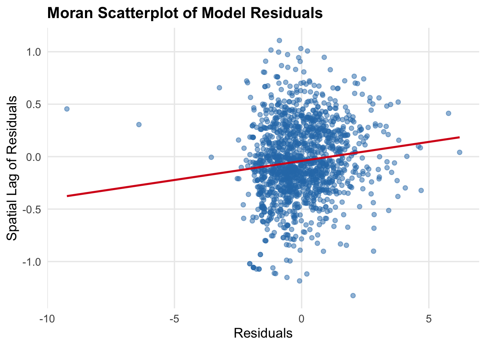

Evictions represent a critical indicator of neighborhood instability and social vulnerability.
In this project, our dependent variable is:
Quarterly eviction total for 2024, aggregated at the census tract level in Philadelphia.
Our core research question is:
Can we predict quarterly eviction filing counts at the census-tract level 1–3 months (i.e., 1 quarter) in advance, enabling the City of Philadelphia to proactively deploy rental assistance, legal aid resources, and community outreach?
Spatial Unit: Census tract Temporal Unit: Quarterly Outcome: Number of eviction filings per tract per quarter Model: Poisson / Negative Binomial (count outcome), or logistic if we binarize high-risk vs low-risk tracts
Why Use Quarterly Data?
Monthly eviction filings are often noisy and volatile. Aggregating to quarters (3-month periods) smooths short-term fluctuations and better aligns with: Budget cycles, Program planning cycles, Policy reporting (quarterly dashboards)
We therefore build a tract–quarter modeling dataset, while still allowing lag structures that represent 1, 2, 4 quarters in the past.
We incorporate three major categories of predictors:
Structural characteristics from ACS and property assessment data
Spatial environmental features such as crime and transit accessibility
Temporal dynamics, including:
Lag 1 quarter (previous quarter’s evictions)
Lag 2 = Lag 4 quarters (same quarter in the previous year)
Our goal is to build and compare multiple statistical and spatial models to determine which approach most accurately predicts tract-level eviction activity.
Data Preparation and Cleaning
This section describes the construction of the final analysis dataset, integrating multiple sources.
Code
library(tidycensus)library(sf)
Linking to GEOS 3.13.0, GDAL 3.8.5, PROJ 9.5.1; sf_use_s2() is TRUE
Code
library(dplyr)
Attaching package: 'dplyr'
The following objects are masked from 'package:stats':
filter, lag
The following objects are masked from 'package:base':
intersect, setdiff, setequal, union
Code
library(readr)library(zoo)
Attaching package: 'zoo'
The following objects are masked from 'package:base':
as.Date, as.Date.numeric
Code
library(lubridate)
Attaching package: 'lubridate'
The following objects are masked from 'package:base':
date, intersect, setdiff, union
── Conflicts ────────────────────────────────────────── tidyverse_conflicts() ──
✖ dplyr::filter() masks stats::filter()
✖ dplyr::lag() masks stats::lag()
ℹ Use the conflicted package (<http://conflicted.r-lib.org/>) to force all conflicts to become errors
Census Tracks
Code
philly_tracts <-get_acs(geography ="tract",state ="PA",county ="Philadelphia",variables ="B01001_001", # total population, used just to get geometryyear =2022,geometry =TRUE)
Getting data from the 2018-2022 5-year ACS
Downloading feature geometry from the Census website. To cache shapefiles for use in future sessions, set `options(tigris_use_cache = TRUE)`.
Eviction filing data from 2021–2024 were collected and aggregated to the tract–quarter level.
Quarterly lags were computed to represent short-term momentum (lag 1) and annual seasonal effects (lag 2 / lag 4).
Spatial features representing public safety and accessibility include: - Crime activity aggregated via spatial joins to census tracts
- Transit accessibility, measured through density of stations within walking distance
These variables quantify environmental exposure that may influence eviction risk.
Code
tract_centroids <-st_centroid(philly_tracts)
Warning: st_centroid assumes attributes are constant over geometries
Code
transit_raw <-read_csv("data/Transit_Stops.csv")
Rows: 22478 Columns: 11
── Column specification ────────────────────────────────────────────────────────
Delimiter: ","
chr (4): LineAbbr, Direction, StopAbbr, StopName
dbl (7): X, Y, FID, Sequence, StopId, Lon, Lat
ℹ Use `spec()` to retrieve the full column specification for this data.
ℹ Specify the column types or set `show_col_types = FALSE` to quiet this message.
Rows: 160388 Columns: 18
── Column specification ────────────────────────────────────────────────────────
Delimiter: ","
chr (6): the_geom, the_geom_webmercator, dc_dist, psa, location_block, text...
dbl (9): cartodb_id, objectid, hour, dc_key, ucr_general, point_x, point_y,...
dttm (1): dispatch_date_time
date (1): dispatch_date
time (1): dispatch_time
ℹ Use `spec()` to retrieve the full column specification for this data.
ℹ Specify the column types or set `show_col_types = FALSE` to quiet this message.
Two temporal lag measures were added: - Lag 1 (t–1 quarter): captures short-term persistence
- Lag 2 (t–4 quarters): captures seasonal effects across years
Together these create a panel-like structure enabling spatiotemporal modeling.
All variables were merged into a unified census-tract-level dataset for 2024 modeling and performance evaluation.
Code
evictions_with_lags <- evictions_quarterly %>%arrange(GEOID, year, quarter) %>%group_by(GEOID) %>%mutate(evictions_lag1Q =lag(eviction_filings, 1), # 1 quarter ago (~3 months)evictions_lag2Q =lag(eviction_filings, 2), # 2 quarters (~6 months)evictions_lag4Q =lag(eviction_filings, 4), # 4 quarters (~12 months)# Rolling means in quarters (e.g., average over last 2 or 4 quarters)evictions_avg_2Q =rollmean(eviction_filings, k =2, fill =NA, align ="right"),evictions_avg_4Q =rollmean(eviction_filings, k =4, fill =NA, align ="right") ) %>%ungroup()head(evictions_with_lags)
# A tibble: 6 × 15
GEOID year_quarter year quarter racial_majority filings_avg
<chr> <chr> <dbl> <int> <chr> <dbl>
1 42101000101 2019-Q4 2019 4 White 0.5
2 42101000101 2020-Q1 2020 1 White 0
3 42101000101 2020-Q1 2020 1 White 0
4 42101000101 2020-Q1 2020 1 White 0
5 42101000101 2020-Q1 2020 1 White 0.5
6 42101000101 2020-Q1 2020 1 White 0.5
# ℹ 9 more variables: filings_avg_prepandemic_baseline <dbl>,
# filings_2020 <int>, eviction_filings <int>, weeks_in_quarter <int>,
# evictions_lag1Q <int>, evictions_lag2Q <int>, evictions_lag4Q <int>,
# evictions_avg_2Q <dbl>, evictions_avg_4Q <dbl>
Warning: There was 1 warning in `summarise()`.
ℹ In argument: `across(all_of(numeric_cols), sum, na.rm = TRUE)`.
ℹ In group 1: `GEOID = "42101000101"` `year_quarter = "2024-Q1"`.
Caused by warning:
! The `...` argument of `across()` is deprecated as of dplyr 1.1.0.
Supply arguments directly to `.fns` through an anonymous function instead.
# Previously
across(a:b, mean, na.rm = TRUE)
# Now
across(a:b, \(x) mean(x, na.rm = TRUE))
Merge All Data
Code
final_panel <- evictions_2024_quarterly %>%# 1. Join ACS structural dataleft_join(acs_final, by ="GEOID") %>%# 2. Join Property structural indicatorsleft_join(property_summary, by ="GEOID") %>%# 3. Join spatial transit accessibilityleft_join(transit_summary, by ="GEOID") %>%# 4. Join crime + crime_rateleft_join(crime_summary, by ="GEOID") %>%# 5. Join geometry (for mapping only)left_join(philly_tracts, by ="GEOID")# Print summarycat("\nMerged dataset created successfully.\n")
# Optional: save final merged tablewrite_csv(st_drop_geometry(final_panel), "data/final_panel_no_geometry.csv")st_write(final_panel, "data/final_panel.geojson", delete_dsn =TRUE)
Warning in clean_columns(as.data.frame(obj), factorsAsCharacter): Dropping
column(s) geometry.y of class(es) sfc_MULTIPOLYGON;sfc
Deleting source `data/final_panel.geojson' using driver `GeoJSON'
Writing layer `final_panel' to data source
`data/final_panel.geojson' using driver `GeoJSON'
Writing 1636 features with 37 fields and geometry type Unknown (any).
Warning in CPL_write_ogr(obj, dsn, layer, driver,
as.character(dataset_options), : GDAL Message 1: NaN of Infinity value found.
Skipped
Exploration
This section presents exploratory data analysis, focusing on spatial patterns and distributional characteristics.
Eviction Data Analysis
Mapping quarterly eviction totals to visualize spatial clustering
Distributional summaries of eviction variations across tracts
Local Indicators of Spatial Association (LISA) to identify hotspots and coldspots
Time-series inspection of lag relationships
Crime and Environmental Context
Spatial distribution of crime events and crime rates
K-Nearest Neighbor (KNN) spatial diagnostics for crime concentrations
Comparison with eviction clusters to explore co-location patterns
Structural and Spatial Features
Mapping ACS variables, property indicators, and transit accessibility
Correlation analysis to detect multicollinearity
Exploration of spatial autocorrelation in predictors
This exploratory stage guides expectations about which models may best capture the relationships in eviction dynamics.
Modeling
Our modeling strategy progresses from simple baselines to increasingly realistic representations of temporal dependence, spatial dependence, and distributional properties of eviction filings. Because eviction data exhibit strong spatial clustering and temporal persistence, we fit 6 models and compare their performance and theoretical validity.
Code
library(spdep)
Loading required package: spData
To access larger datasets in this package, install the spDataLarge
package with: `install.packages('spDataLarge',
repos='https://nowosad.github.io/drat/', type='source')`
Code
library(MASS) # for Negative Binomial
Attaching package: 'MASS'
The following object is masked from 'package:dplyr':
select
Code
library(spatialreg)
Loading required package: Matrix
Attaching package: 'Matrix'
The following objects are masked from 'package:tidyr':
expand, pack, unpack
Attaching package: 'spatialreg'
The following objects are masked from 'package:spdep':
get.ClusterOption, get.coresOption, get.mcOption,
get.VerboseOption, get.ZeroPolicyOption, set.ClusterOption,
set.coresOption, set.mcOption, set.VerboseOption,
set.ZeroPolicyOption
Code
df <-read_csv("data/final_panel_no_geometry.csv")
Rows: 1636 Columns: 39
── Column specification ────────────────────────────────────────────────────────
Delimiter: ","
chr (4): GEOID, year_quarter, geometry.x, geometry.y
dbl (35): year, quarter, filings_avg, filings_avg_prepandemic_baseline, fili...
ℹ Use `spec()` to retrieve the full column specification for this data.
ℹ Specify the column types or set `show_col_types = FALSE` to quiet this message.
Code
df <- df %>%drop_na()# ---- Outcome variable ----y_var <-"eviction_filings"# ---- Temporal lag (Lag 1 quarter) ----lag_var <-"evictions_lag1Q"# ---- Structural variables ----acs_vars <-c("pct_black","median_income", "pct_renter","pct_rent_burdened","median_rent","property_age")# ---- Property variables ----property_vars <-c("median_market_value","pct_low_value","pct_tax_delinquent")# ---- Spatial variables ----spatial_vars <-c("n_stations_800m","crime_rate")# Combine predictors into one vectorX_vars <-c(acs_vars, property_vars, spatial_vars)# Build formula for cross-sectional OLSformula_ols <-as.formula(paste(y_var, "~", paste(X_vars, collapse =" + ")))# Build formula for lagged OLSformula_lag <-as.formula(paste(y_var, "~", lag_var, " + ", paste(X_vars, collapse =" + ")))
There is no severe multicollinearity issue in our dataset.
Code
library(car)
Loading required package: carData
Attaching package: 'car'
The following object is masked from 'package:purrr':
some
The following object is masked from 'package:dplyr':
recode
Specification:Evict_2024 ~ ACS + property + spatial
A simple benchmark without temporal or spatial components.Very low explanatory power (R² = 0.26) and cannot capture either temporal persistence or spatial clustering.
Code
model1_ols <-lm(formula_ols, data = df)summary(model1_ols)
Specification:Evict_2024 ~ Time lag + ACS + property + spatial
Introduce temporal dependence using the previous quarter’s eviction filings. Model fit increases dramatically (R² = 0.91), suggesting eviction filings are highly time-lag-dependent. But all other variables are insignificant and spatial autocorrelation remains in residuals. It is still biased.
Code
model2_lag_ols <-lm(formula_lag, data = df)summary(model2_lag_ols)
Specification:NB(Evict_2024) ~ Time lag + ACS + property + spatial
Use Poisson regression to address the count nature of eviction filings. Better suited for non-negative, skewed count outcomes; Improves statistical consistency compared to OLS; But still ignores spatial dependence.
Code
model3_poisson <-glm(formula_lag, data = df, family =poisson())summary(model3_poisson)
Call:
glm(formula = formula_lag, family = poisson(), data = df)
Coefficients:
Estimate Std. Error z value Pr(>|z|)
(Intercept) 1.360e+00 1.212e-01 11.215 < 2e-16 ***
evictions_lag1Q 5.244e-02 6.741e-04 77.798 < 2e-16 ***
pct_black 2.862e-03 3.595e-04 7.961 1.71e-15 ***
median_income 1.011e-07 7.554e-07 0.134 0.893539
pct_renter 8.351e-03 8.246e-04 10.127 < 2e-16 ***
pct_rent_burdened 5.027e-03 7.838e-04 6.414 1.42e-10 ***
median_rent -7.726e-05 4.536e-05 -1.703 0.088524 .
property_age -2.649e-03 8.339e-04 -3.176 0.001491 **
median_market_value -1.211e-06 1.271e-07 -9.532 < 2e-16 ***
pct_low_value -2.106e-03 7.630e-04 -2.760 0.005781 **
pct_tax_delinquent 1.285e-03 9.588e-04 1.340 0.180220
n_stations_800m -4.161e-04 1.637e-04 -2.542 0.011029 *
crime_rate 4.989e-04 1.398e-04 3.570 0.000357 ***
---
Signif. codes: 0 '***' 0.001 '**' 0.01 '*' 0.05 '.' 0.1 ' ' 1
(Dispersion parameter for poisson family taken to be 1)
Null deviance: 10203.6 on 1471 degrees of freedom
Residual deviance: 2714.6 on 1459 degrees of freedom
AIC: 7817.7
Number of Fisher Scoring iterations: 5
Model 4 — Spatial Lag Models (SAR / SLX)
Account for strong spatial autocorrelation in both outcome and predictors. All key variables show extremely strong spatial autocorrelation (Moran’s I p ≈ 0), showing that spatial autocorrelation feature is very significant and need to be consider.
SAR achieves the best AIC among the traditional models, However, most covariates become statistically insignificant, likely due to multicollinearity induced by spatial spillovers
Overall, it captures spatial processes but loses interpretability and still does not handle count distribution.
Call:lagsarlm(formula = formula_lag, data = df, listw = lw)
Residuals:
Min 1Q Median 3Q Max
-34.35571 -1.11646 -0.05837 1.01232 24.01827
Type: lag
Coefficients: (asymptotic standard errors)
Estimate Std. Error z value Pr(>|z|)
(Intercept) -1.1560e-01 7.0400e-01 -0.1642 0.8696
evictions_lag1Q 9.4970e-01 9.4971e-03 99.9989 <2e-16
pct_black 2.0076e-03 2.5176e-03 0.7974 0.4252
median_income 4.1203e-07 4.1615e-06 0.0990 0.9211
pct_renter 8.5221e-03 5.3157e-03 1.6032 0.1089
pct_rent_burdened 3.3103e-03 4.8746e-03 0.6791 0.4971
median_rent 1.8789e-04 2.7561e-04 0.6817 0.4954
property_age -5.5505e-03 5.0888e-03 -1.0907 0.2754
median_market_value -5.5657e-07 6.5590e-07 -0.8486 0.3961
pct_low_value -1.2243e-03 5.3945e-03 -0.2269 0.8205
pct_tax_delinquent 2.3159e-03 6.9843e-03 0.3316 0.7402
n_stations_800m -5.3397e-04 9.6170e-04 -0.5552 0.5787
crime_rate 1.4755e-04 9.1496e-04 0.1613 0.8719
Rho: 0.036932, LR test value: 3.4327, p-value: 0.063918
Asymptotic standard error: 0.020052
z-value: 1.8418, p-value: 0.065507
Wald statistic: 3.3922, p-value: 0.065507
Log likelihood: -3348.558 for lag model
ML residual variance (sigma squared): 5.5386, (sigma: 2.3534)
Number of observations: 1472
Number of parameters estimated: 15
AIC: 6727.1, (AIC for lm: 6728.5)
LM test for residual autocorrelation
test value: 18.695, p-value: 1.5337e-05
Model 5 — Posson+spatial lag
Combine strengths of Poisson (for count data) and spatial lag (for spillovers).
It is more realistic for eviction processes: temporal, spatial, outcome, but residual Moran’s I indicates remaining spatial autocorrelation, meaning the model is still misspecified. Moving in the right direction, but spatial heterogeneity is not fully adjusted.
Code
num_vars <-c("evictions_lag1Q", "pct_renter", "crime_rate")for (v in num_vars) { df[[v]][!is.finite(df[[v]])] <-median(df[[v]], na.rm =TRUE)}df$W_evictions_lag1Q <-lag.listw(lw, df$evictions_lag1Q)df$W_pct_renter <-lag.listw(lw, df$pct_renter)df$W_crime_rate <-lag.listw(lw, df$crime_rate)
Model 6 provides the most accurate and theoretically justified explanation of eviction filings because it integrates temporal dependence (lag); spatial spillovers (W·terms); count modeling (Poisson) and unobserved spatial heterogeneity (eigenvectors).
This combination corrects model misspecification, reduces AIC, and yields interpretable and robust estimates.
Model Diagnostics and Validation
To evaluate model performance and generalizability, we conduct:
Cross-validation on 2024 Quarters
Train models on earlier quarters
Validate predictions on later quarters (e.g., Q3 → Q4)
Evaluate RMSE, MAE, R², and residual spatial autocorrelation
Cross-validation performance across quarters shows a clear improvement as temporal, spatial, and distributional components are progressively added to the models.
Model 1 performs the worst, confirming that a simple OLS cannot capture eviction dynamics. Model 2 achieves the best predictive accuracy overall, reflecting the strong temporal persistence in eviction filings; however, because it captures only time-lag effects and leaves severe spatial autocorrelation unresolved, it is not an adequate structural model.
Poisson-based models (Models 3 and 5) perform more consistently across time by aligning with the count nature of eviction data, and Model 5 further improves by incorporating spatial spillovers. The final Model 6 produces similarly strong predictive performance while also fixing residual spatial dependence through Moran’s eigenvectors, yielding the most theoretically complete and empirically reliable model.
Therefore, despite Model 2’s raw accuracy, Model 6 is the chosen final model because it provides both solid predictive ability and the correct spatiotemporal data-generating structure.
df$resid <-residuals(model6, type ="pearson")# Moran's Imoran_test <-moran.test(df$resid, lw)moran_test
Moran I test under randomisation
data: df$resid
weights: lw
Moran I statistic standard deviate = 4.8597, p-value = 5.877e-07
alternative hypothesis: greater
sample estimates:
Moran I statistic Expectation Variance
3.630981e-02 -6.798097e-04 5.793431e-05
Code
library(spdep)lag_resid <-lag.listw(lw, df$resid)plot_df <-data.frame(resid = df$resid,lag_resid = lag_resid)ggplot(plot_df, aes(x = resid, y = lag_resid)) +geom_point(alpha =0.5, size =1.8, color ="#2C7BB6") +geom_smooth(method ="lm", se =FALSE, color ="#D7191C", linewidth =1) +theme_minimal(base_size =14) +labs(x ="Residuals",y ="Spatial Lag of Residuals",title ="Moran Scatterplot of Model Residuals" ) +theme(panel.grid.minor =element_blank(),plot.title =element_text(face ="bold", size =16) )
`geom_smooth()` using formula = 'y ~ x'

Code
library(ggplot2)df_sf$resid <-residuals(model6, type ="pearson")ggplot(df_sf) +geom_sf(aes(fill = resid), color =NA) +scale_fill_gradient2(low ="#2166AC", mid ="white", high ="#B2182B",midpoint =0, name ="Residuals" ) +theme_minimal(base_size =13) +theme(legend.position ="right",panel.grid =element_blank() ) +labs(title ="Spatial Distribution of Model Residuals")